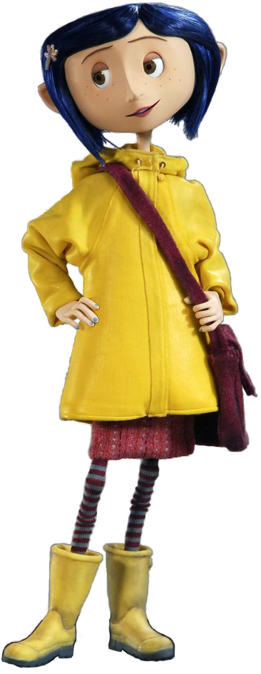
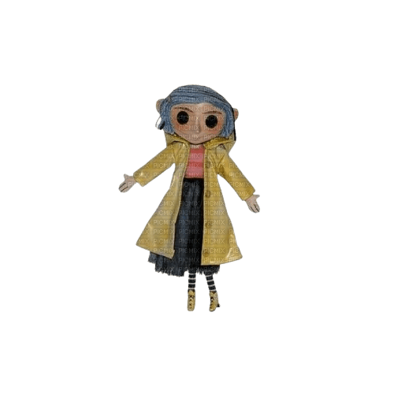
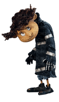
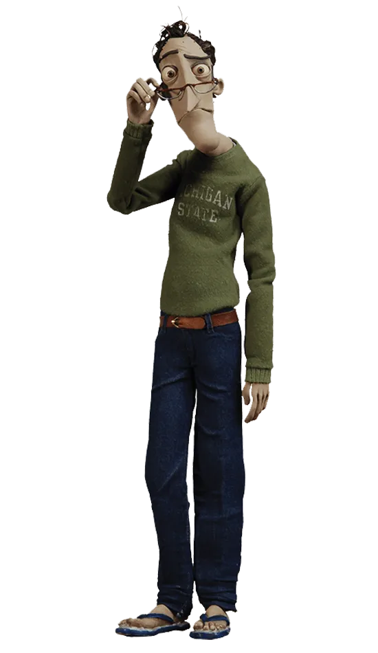

Una de las mejores obras creadas con stop-motion


Una obra maestra de la animación stop-motion, destacada por ser el primer largometraje diseñado en 3D estereoscópico. Dirigida por Henry Selick, requirió 18 meses de rodaje, 130 sets distintos y el uso de impresoras 3D para crear miles de expresiones faciales en marionetas.

Conoce a los personajes


Coraline


Wybie

Gato


Padre

Madre